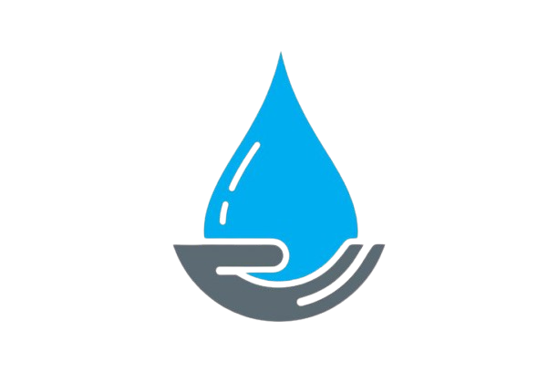

Captación de agua pluvial para una comunidad más resiliente
Aprende cómo aprovechar la lluvia, calcula tu ahorro y conoce proyectos exitosos en Zinacantepec.
Mapa interactivo — Zonas de Zinacantepec
Haz clic en las zonas para conocer su nivel de escasez.
Soluciones recomendadas
Opciones sostenibles para aprovechar la lluvia en casa y en comunidad.

Sistema doméstico
Instala canaletas, filtros y un tinaco para recolectar agua de lluvia y usarla en jardín, limpieza y descarga de baño.

Sistema comunitario
Implementa sistemas de captación en escuelas, centros comunitarios y edificios municipales para riego o limpieza pública.
Recarga de mantos
Crea zanjas de infiltración y pozos pluviales que permitan que el agua regrese al subsuelo, fortaleciendo los acuíferos.
Contáctanos
Si deseas más información o asesoría sobre sistemas de captación de agua, envíanos un mensaje.
- Ubicación: Zinacantepec, Estado de México
- Correo: contactoagua@gmail.com
- Teléfono: +52 722 123 4567